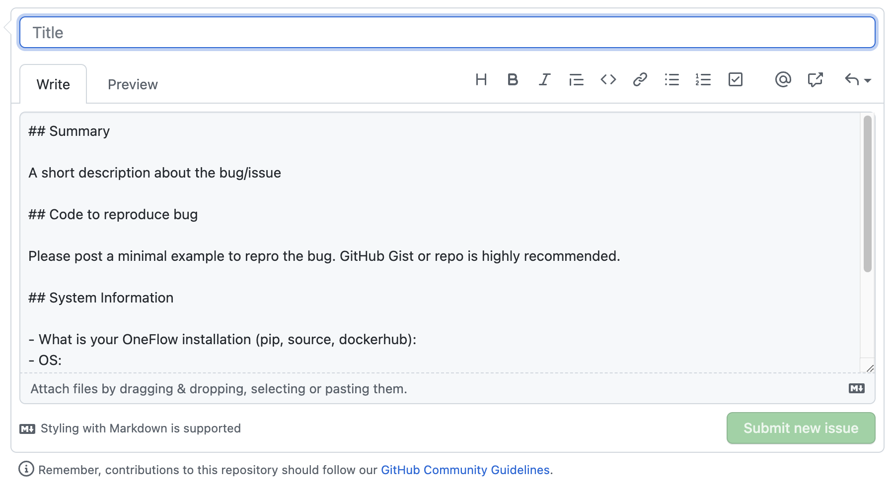
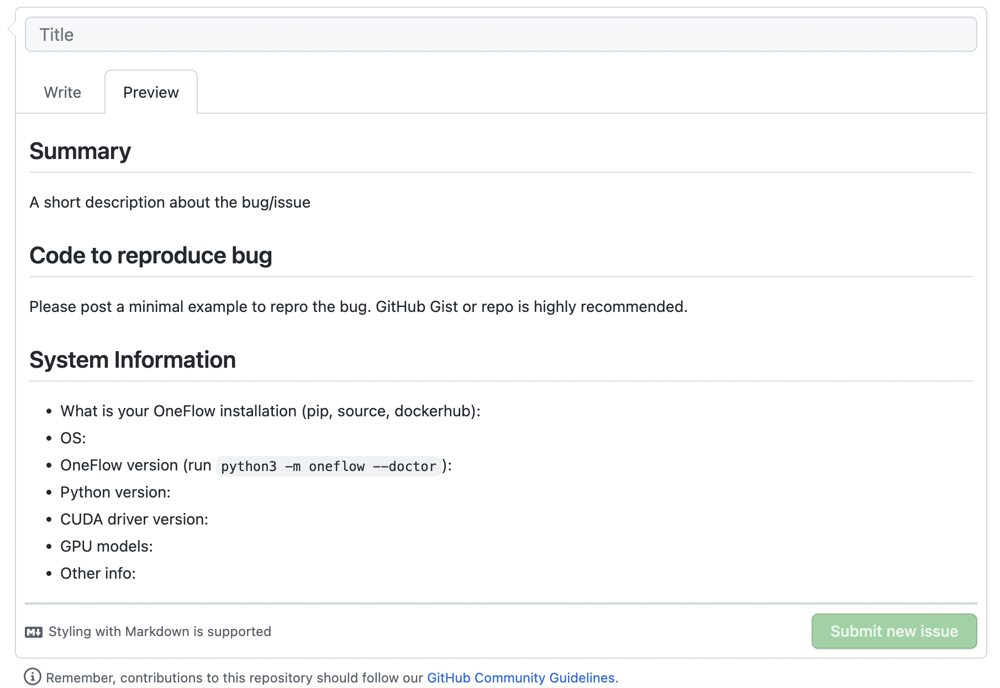

快速上手 Markdown¶
 Bilibili 视频传送门：快速上手 Markdown
Bilibili 视频传送门：快速上手 Markdown
什么是 Markdown¶
Markdown 是一种标记性语言，在 GitHub 上提交 issue、PR，默认都使用的是 Markdown。
Markdown 简单易学，展现内容的手段丰富多样，可以参与开源，也可以用来记录自己的笔记。
在 GitHub 上写 Markdown¶
接下来我将以深度学习框架 OneFlow 的 issue 为例子， 展现一下 Markdown 的功能。
我们可以看到在下面这个 issue 中，既有图片也有代码区，还有列表，这些是如何用 Markdown 实现的呢？

我们在 OneFlow 中创建一个新的 issue，点击 New issue 按钮。

在 Write 和 Preview 部分就是 Markdown 书写区和预览区的一个对比。

-
##加空格后面所对应的内容就是标题 -
连接符
-加空格后面的内容是列表所对应的一个 item
学习 Markdown 语法¶
我们接下来看看常见的 Markdown 语法有哪些，系统学习下。
1. 标题¶
在想要设置为标题的文字前面加 # 来表示
一个 # 是一级标题，两个 # 是二级标题，以此类推。支持六级标题。
# 这是一级标题
## 这是二级标题
### 这是三级标题
#### 这是四级标题
##### 这是五级标题
###### 这是六级标题
2. 图片¶
语法：

图片 alt 就是显示在图片下面的文字，相当于对图片内容的解释。 图片 title 是图片的标题，当鼠标移到图片上时显示的内容。title 可加可不加。
示例：

效果：

3. 超链接¶
语法：
[超链接名](超链接地址 "超链接title")
title 可加可不加
示例：
[OneFlow](https://github.com/Oneflow-Inc/oneflow)
效果：
4. 代码¶
单行代码：代码之间分别用一个反引号包起来
`代码内容`
代码块：代码之间分别用三个反引号包起来，且两边的反引号单独占一行，在第一行引号后面加入代码种类可以获得代码高亮。
```Python
class Solution:
def twoSum(self, nums: List[int], target: int) -> List[int]:
hashtable = dict()
for i in range(len(nums)):
if target - nums[i] in hashtable:
return [i, hashtable[target - nums[i]]]
hashtable[nums[i]] = i
```
5. 引用¶
> 表示引用，表示当前语句不是自己的，在开源项目中常常用于回复别人的话。
示例：
> C++ 很好用
效果：
C++ 很好用
除了上述语法外，Markdown 还有很多用法，大家可以在扩展阅读中学习。
VS Code 插件分享¶
这里分享一个非常实用的插件，在使用 Markdown 时，Auto-Open Markdown Preview 插件可以帮我们实时渲染 Markdown 页面。